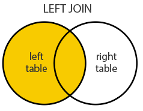

Week 3
Predicates, Simplification & Tesselations
Interior, Boundary and Exterior: POINTS

Interior, Boundary and Exterior: LINESTRING

Interior, Boundary and Exterior: POLYGON

Overlap is a POINT: 0D


Overlap is a LINESTRING: 1D

Binary Predicates
Collectively, predicates define the type of relationship each 2D object has with another.
Of the ~ 512 unique relationships offered by the DE-9IM models a selection of ~ 10 have been named.
These are include in PostGIS/GEOS and are made accessible via R sf

st_relates vs. predicate calls…

(mutate(states,
deim9 = st_relate(states, wa),
touch = st_touches(states, wa, sparse = F)))
#> Simple feature collection with 4 features and 3 fields
#> Geometry type: MULTIPOLYGON
#> Dimension: XY
#> Bounding box: xmin: -124.8485 ymin: 41.98818 xmax: -104.0397 ymax: 49.00244
#> Geodetic CRS: WGS 84
#> name geometry deim9 touch
#> 1 Idaho MULTIPOLYGON (((-111.0455 4... FF2F11212 TRUE
#> 2 Montana MULTIPOLYGON (((-109.7985 4... FF2FF1212 FALSE
#> 3 Oregon MULTIPOLYGON (((-117.22 44.... FF2F11212 TRUE
#> 4 Washington MULTIPOLYGON (((-121.5237 4... 2FFF1FFF2 FALSESpatial Joining
- Joining two non-spatial datasets relies on a shared key that uniquely identifies each record in a table

Spatially joining data relies on shared geographic relations rather then a shared key
Like filter, these relations can be defined by a predicate
As with tabular data, mutating joins add data to the target object (x) from a source object (y).
st_join
In
sfst_joinprovides this joining capacityBy default,
st_joinperforms a left join (Returns all records from x, and the matched records from y)

- It can also do inner joins by setting
left = FALSE.

The default predicate for
st_join(andst_filter) isst_intersectsThis can be changed with the join argument (see
?st_joinfor details).
Clipping
Clipping is a form of subsetting that involves changing the geometry of at least some features.
Clipping can only apply to features more complex than points: (lines, polygons and their ‘multi’ equivalents).

Ramer–Douglas–Peucker
Mark the
firstandlastpoints as keptFind the point,
pthat is the farthest from the first-last line segment. If there are no points between first and last we are done (the base case)If
pis closer thantoleranceunits to the line segment then everything between first and last can be discardedOtherwise, mark p as kept and repeat steps 1-4 using the points between first and p and between p and last (the call to recursion)

st_simplify

A limitation with Douglas-Peucker (therefore st_simplify) is that it simplifies objects on a per-geometry basis.
This means the ‘topology’ is lost, resulting in overlapping and disconnected geometries.

rmapshaper
In R, the rmapshaper package implements the Visvalingam algorithm in the ms_simplify function.
- The
ms_simplifyfunction is a wrapper around themapshaperJavaScript library (created by lead viz experts at the NYT)

Core Concepts of Spatial Data: (Kuhn 2012)

Uber Hex Addressing
- Breaks the world into Hexagons…

what3word
- Breaks the world into 3m grids encoded with unique 3 word strings

Southern Coverage: Square

Southern Coverage: Hexagon


Voronoi Polygons
Voronoi/Thiessen polygon boundaries define the area closest to each anchor point relative to all others
They are defined by the perpendicular bisectors of the lines between all points.

Voronoi Polygons

Voronoi Polygons
- Usefull for tasks such as:
- nearest neighbor search,
- facility location (optimization),
- largest empty areas,
- path planning…
- Also useful for simple interpolation of values such as rain gauges,


Southern Coverage: Voronoi

Delaunay triangulation
- A Delaunay triangulation for a given set of points (P) in a plane, is a triangulation DT(P), where no point is inside the circumcircle of any triangle in DT(P).

Delaunay triangulation
The Delaunay triangulation of a discrete POINT set corresponds to the dual graph of the Voronoi diagram.
The circumcenters (center of circles) of Delaunay triangles are the vertices of the Voronoi diagram.

Used in landscape evaluation and terrian modeling

Modifiable areal unit problem (MAUP)
The modifiable areal unit problem (MAUP) is a source of statistical bias that can significantly impact the results of statistical hypothesis tests.
MAUP affects results when point-based measures are aggregated into districts.
The resulting summary values (e.g., totals or proportions) are influenced by both the shape and scale of the aggregation unit.